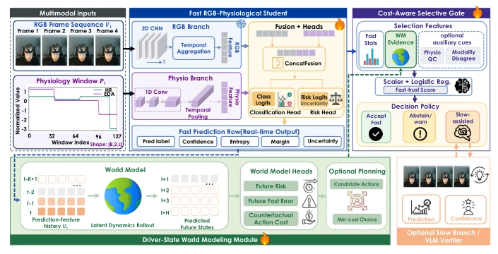
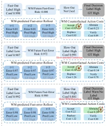
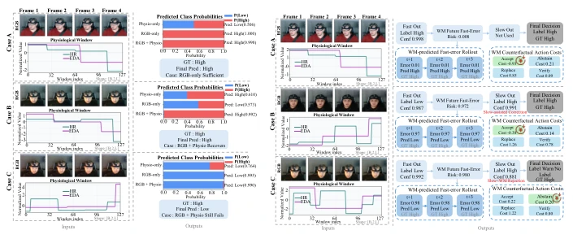

This paper equips the autonomous driving cockpit with a "mind-reading" capability, but is honest: large models VLM are too slow to serve as a resident security guard [1][5]. The core is a lightweight RGB+physiological signal student, plus a "do as circumstances permit" gating mechanism. The highlight is that physiological signals indeed save the day, reducing false positives during visual ambiguity. But there are also many drawbacks: physiological signals only need window-level alignment, not too precise, this is a bit lazy; the world model can predict future risks, but calibration drift is severe on extreme groups (e.g., anger, sadness), indicating that "prediction" things still need caution in safety-critical scenarios. Overall, it is a pragmatic deployment scheme, but do not expect it to solve all calibration problems, after all edge devices are not omnipotent.
研究动机Motivation
自动驾驶接管场景下，驾驶员状态监测必须低延迟且安全。现有方案常依赖视觉，但高需求状态未必有表情（如压力），需生理信号补充。大模型 VLM 虽强但推理延迟高，不适合常驻监控 [1][5]。知识蒸馏效果也不稳定。现有工作多关注视觉或纯生理，缺乏成本感知的选择性推理。本文旨在解决部署中的风险与延迟矛盾，避免不安全误判。数据集 manD 提供了多模态支持 [8]。此外，安全关键场景要求不对称风险，误报比漏报更危险，这需要选择性预测机制来平衡覆盖率与风险。
In autonomous driving takeover scenarios, driver state monitoring must be low-latency and safe. Existing solutions often rely on vision, but high-demand states may not have expressions (e.g., stress), needing physiological signals to supplement. Large models VLM are strong but inference latency is high, unsuitable for constant monitoring [1][5]. Knowledge distillation effects are also unstable. Existing work mostly focuses on vision or pure physiology, lacking cost-aware selective inference. This paper aims to resolve the risk and latency contradiction in deployment, avoiding unsafe misjudgments. Dataset manD provides multimodal support [8]. Additionally, safety-critical scenarios require asymmetric risk, false positives are more dangerous than false negatives, this requires selective prediction mechanisms to balance coverage and risk.
System divided into three parts: 1. Lightweight RGB-physiological student, fusing in-car video and HR/EDA signals, 3ms inference. 2. Cost-aware gating, evaluating confidence, entropy, modality divergence, etc., deciding accept, reject, or call slow branch. 3. Driver state world model, rolling prediction of future errors and counterfactual costs in latent space, assisting gating. World model does not replace student, but provides predictive evidence. Gating training divided into two stages, first predict accuracy rate, then select threshold to maximize utility. World model predicts future risk through latent rollout, combined with action costs, helping system decide when to intervene. Specifically, world model performs closed-loop rolling in latent space, estimating future high-speed model error probability, and calculating counterfactual system cost. Gating uses these predictive features and instantaneous reliability signals, selecting final system actions, such as accepting fast prediction, warning, or replacing. This design separates perception accuracy from decision risk, ensuring priority on reducing unsafe false positives in safety-critical scenarios.

Fig. 1: Overview of the proposed framework. The system continuously processes RGB frames and window-level HR/EDA signals through a lightweight fast student. Instead of forcing a mandatory classification, a learned cost-aware gate evaluates instantaneous reliability and predictive evidence from a compact driver-state world modeling module. The gate then decides whether to accept_fast, abstain_warn, slow_replace, or slow_verify. The slow branch is optional and used only for selective replacement or verification.
Tested on manD dataset, comparing RGB and physiological unimodal. RGB+physiological student achieves 0.7440 Macro-F1. Selective inference reduces unsafe false positives from 17.37% to 5%, latency remains 3ms. World model provides predictive evidence, but calibration drift on worst-group (e.g., anger, sadness). Ablation shows physiological window does not need strict synchronization. Experiments also show, VLM teacher not significantly better than supervised student. Under matched coverage, learned gating outperforms random rejection and uncertainty threshold. Although world model can improve some safety metrics, but worst-group evaluation reveals calibration drift's persistent challenges, indicating relying solely on predictive evidence is insufficient to solve group shift problems.

Fig. 4: Driver-state world model roll- out and action-cost estimation. The world model provides predictive evidence by sim- ulating future per-step risks and counterfac- tual system-level action costs. In Case B and C, although the instantaneous fast output is incorrect (Low), the world model anticipates high future risk and estimates that Abstain or Replace yields the lowest cost, thereby guiding the gate toward a safer intervention.
其他图片Other Figures

Fig. 3: Qualitative comparison of modality contributions. Case A shows visual cues are sufficient. Case B demonstrates the necessity of mul- timodal fusion: when visual features are ambiguous (head down), physio- logical dynamics (EDA/HR drop) suc- cessfully recover the true High demand state. Case C shows a failure case where both modalities fail to capture the state change.